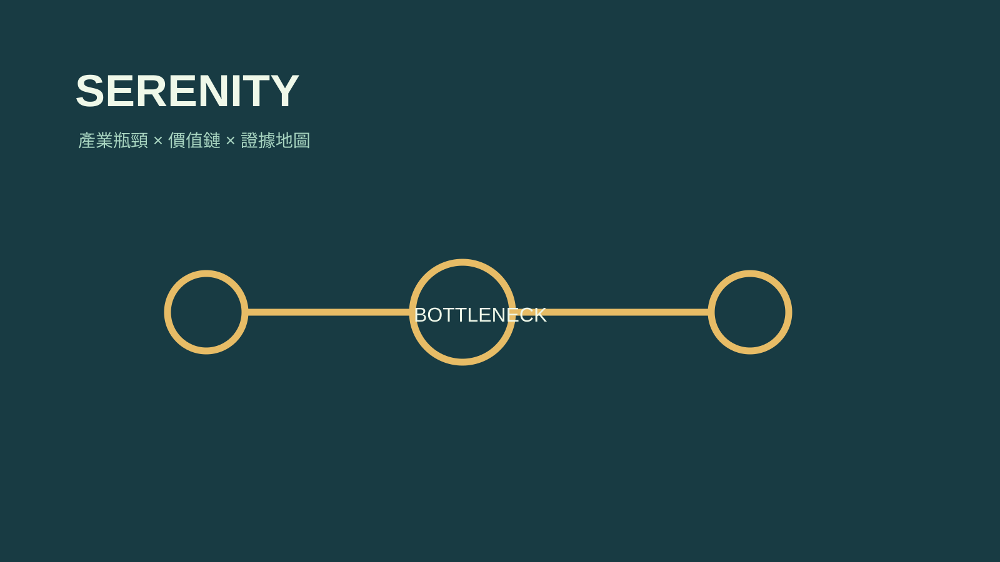

技能包 · 專屬顧問 · 量化投資
Serenity 產業專家顧問
2026.08 · 個人專案

FIG. 22 — 產品主畫面
關於這個作品
Serenity 是一位產業研究專家顧問。它從系統變化一路追到價值鏈的稀缺環節，排序值得追查的公司與假設，同時要求一手證據、反方觀點與下一步驗證點，避免把研究直接包裝成交易指令。
作品亮點
由產業變化展開供應鏈與價值鏈地圖
定位瓶頸、稀缺層與可能受益的候選者
以一手證據、風險與反方觀點壓力測試論點
輸出研究優先序與下一步驗證問題